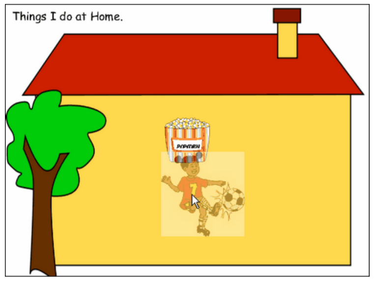
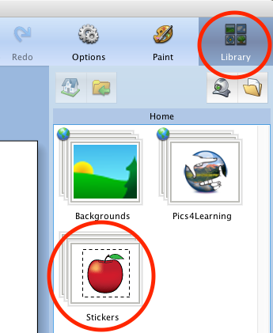
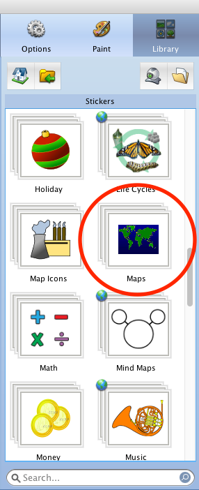
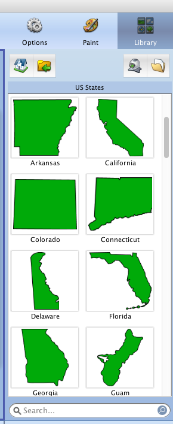
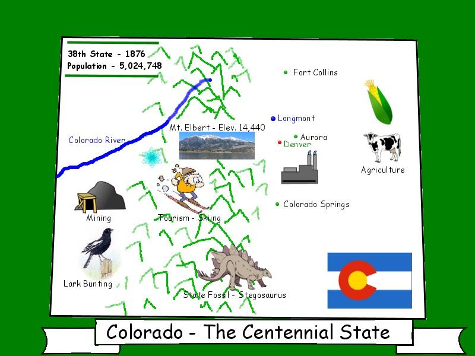
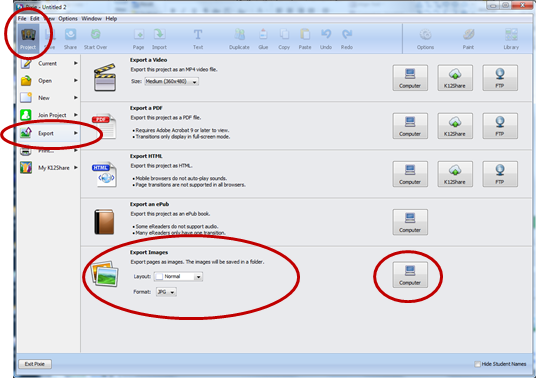
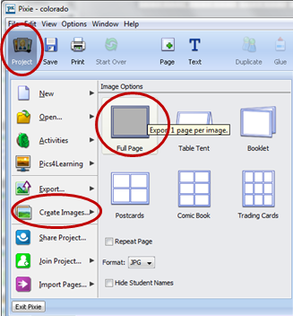
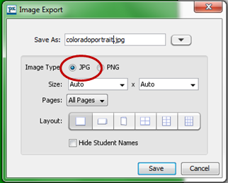

Do It! Pixie: Design a Home State Reference Map
 The Challenge
The Challenge
Your challenge is to use Pixie to teach about your home state. You will research fun facts about your state, and at least three of them should include measurement details (e.g. height, weight, distance, or even age.) You will convert the measurements to different units and decide which units to include on your reference map.
Getting Started
Start with an activity to get used to Pixie. This activity is called Introducing My Family!
In this activity, you will make a two-page project about your family and print it as a table tent. You will learn many Pixie skills, including how to use the shape tool, paintbrush tool, and stickers.
Do the project activity twice to create two projects—one for each team partner. Take turns with your partner so you both learn how to use Pixie.
You should each do the project about your partner’s family, not your own. You will have to ask your partner questions to learn about his or her family.
Project Steps
-
Create a State Reference Map
- Add State Stickers
- Add Content to Your State Reference Map
-
Collect Your Measurements
-
Save Your State Reference Map
Create a State Reference Map
Create a reference map of your home state. Or, if you prefer, you can pick another interesting state for your project.
Launch Pixie and click on the Project button. Select New.
Click on either Landscape or Portrait depending on which one will fit the outline of your state shape better.
Add State Stickers
If you are using Pixie 3, click on the Stickers Tab.
If you are using Pixie 4, click on the Library Tab and then click the Stickers folder.
Select the Maps folder. Then select the US States folder. Click on the state picture you will use for your project.
  Add Content to Your State Reference Map
What are some interesting facts about your state? Go online and find at least 15 interesting facts that you can add to your state reference map. Include pictures and labels to represent each fact. Remember to find some sort of measurement information for at least three of the places on your map.
Ideas:
- Location of your hometown or school
- State Capital
- Largest Cities
- Geographic features (mountains, lakes, rivers)
- State Flag
- State nickname or motto
- State Symbols (bird, flower, song)
- Population
- Major Industries (oil, farming, technology)
- Year of Statehood
- Name of Governor
- Location of important historical events
- Landmarks (bridges, monuments)
- Tourist attractions (parks, sports, museums)
Use all of the following tools/options in Pixie to create your reference map:
- Pixie Stickers
- Images downloaded from the web
- Paintbrush
- Text
- Shapes
To use images from the web, save the image to your student folder. Then, click the "Browse for a File" button and select your image.
Did you learn anything new about your state? What were some of the most interesting facts you learned about your state?

Collect Your Measurements
You found measurement information for at least three of your interesting facts. Now create a table to convert your measurements accurately. The first row has been filled in as an example. Remember, you will be using multiplication to convert your units.
|
Interesting Place |
Measurement |
Conversion Factor |
Math |
New Measurement |
|
Green River |
100 miles long |
1 mile = 5280 feet |
100 x 5280 = 528,000 |
528,00 feet long |
Decide which measurement you want to include on your map.
Save Your State Reference Map
When you have completed your diagram, click the Project button.
If you are using Pixie 4:
- Select Export.
- Under Export Images, select Normal Layout.
- Select JPG Format.
- Click the Computer button and save your work to your student folder.

If you are using Pixie 3:
- Select Create Images.
- Click Full Page.
- Save your work to your student folder as a JPG image.
 